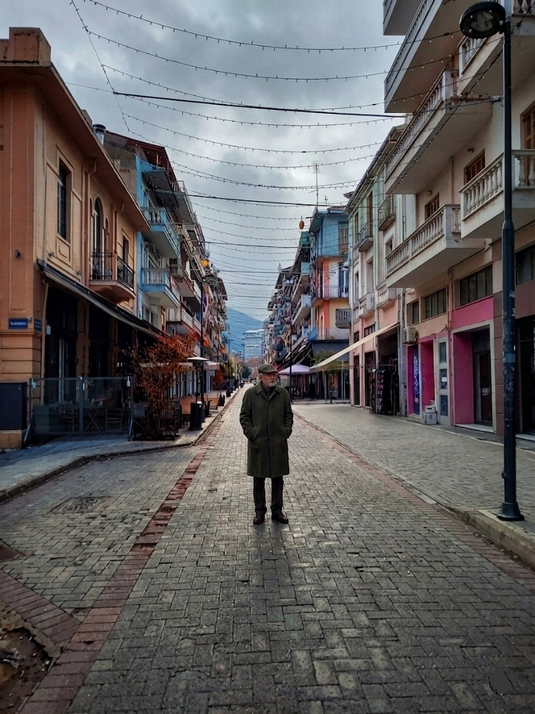
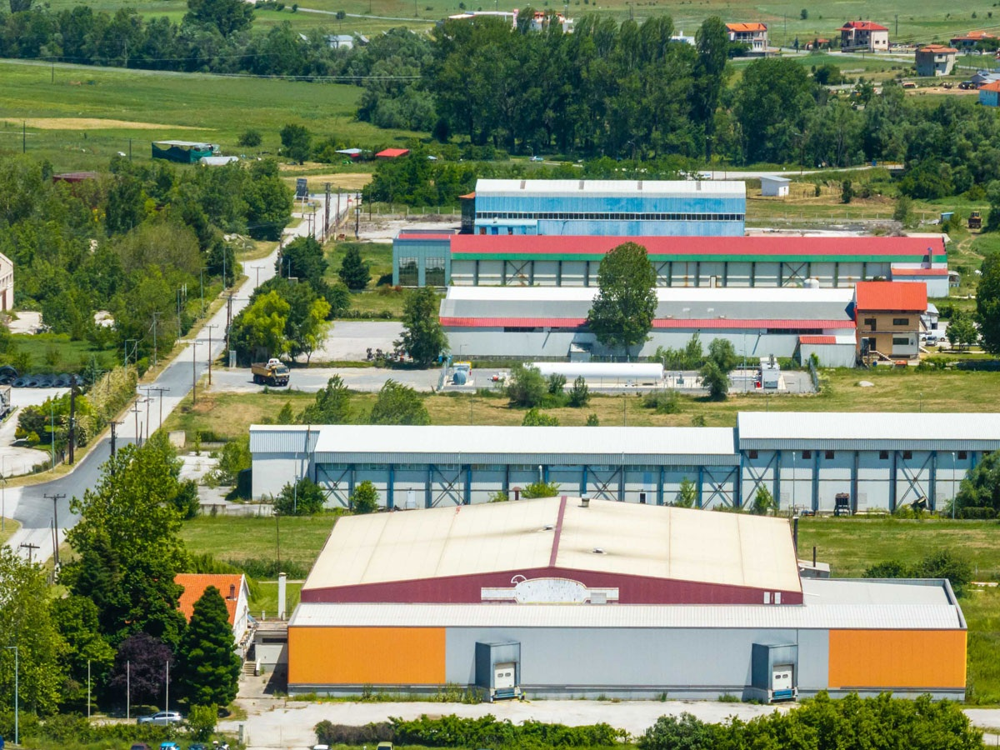

Νέα & Παρεμβάσεις
Οι επίσημες τοποθετήσεις και οι προτάσεις μου για την ανάπτυξη και την ασφάλεια της περιοχής μας.
Θωράκιση της Τοπικής Αγοράς απέναντι στις Κυβερνοαπειλές
Ανοίγουμε τη συζήτηση για την προστασία των τοπικών επιχειρήσεων από τις ψηφιακές απάτες. Η ασφάλεια των δεδομένων είναι η βάση για ένα υγιές εμπόριο.
Διαβάστε το άρθρο →Η Τηλεατρική ως Ασπίδα Υγείας για τις Ακριτικές Περιοχές
Η τεχνολογία έχει τη δύναμη να εκμηδενίζει τις αποστάσεις και να σώζει ζωές. Καταθέτω συγκεκριμένες προτάσεις για την αναβάθμιση των υποδομών υγείας στη Φλώρινα μέσω προηγμένων συστημάτων τηλεατρικής για την άμεση προστασία των πολιτών.
Διαβάστε το άρθρο →
Έξυπνη Πόλη (Smart City): Από τη Θεωρία στην Πράξη
Αναλύουμε τους τρόπους με τους οποίους ο Δήμος μας μπορεί να αξιοποιήσει τους πόρους του ΕΣΠΑ και του Ταμείου Δίκαιης Μετάβασης για έξυπνα συστήματα φωτισμού, στάθμευσης και ενεργειακής διαχείρισης, χωρίς καμία απολύτως επιβάρυνση του δημότη.
Διαβάστε το άρθρο →
Για τον τόπο μας και το ψωμί των παιδιών μας
Η λύση για τη Φλώρινα δεν θα έρθει από μεγάλα λόγια, αλλά από πράξεις. Με τα Κέντρα Ψηφιακής Εργασίας δημιουργούμε άμεσα νέες θέσεις για να κρατήσουμε τα παιδιά μας στον τόπο τους...
Διαβάστε το άρθρο →
Απορρόφηση Κονδυλίων ΕΣΠΑ & Δίκαιης Μετάβασης
Η ΒΙΠΕ Φλώρινας μπορεί να γίνει «πνεύμονας» ανάπτυξης. Με ενισχύσεις έως 70% από τη Δίκαιη Μετάβαση και αξιοποιώντας το κλίμα μας για τεχνολογίες αιχμής όπως τα Data Centers, δημιουργούμε μόνιμες δουλειές για να κρατήσουμε τους νέους μας εδώ...
Διαβάστε το άρθρο →Η πραγματικότητα δεν κρύβεται πίσω από «θα»
Ο τόπος μας δεν έχει ανάγκη από άλλα χτυπήματα στην πλάτη. Όταν η ΒΙΠΕ ρημάζει και τα δημόσια κτίρια σαπίζουν, το Ταμείο Δίκαιης Μετάβασης και το ΕΣΠΑ προσφέρουν λύσεις χωρίς να πληρώσει ο πολίτης ούτε ένα ευρώ. Ποιος φρενάρει την ανάπτυξη;
Διαβάστε το άρθρο →